Körömparadicsom
Bemutatkozás
Wágner Anikó vagyok, műkörmös és kézápoló
2016-ban végeztem a Brillbird OKJ-s szakmai képzésén.Ugyanezen évben megkezdtem hivatásom gyakorlását.
Az OKJ-s képzés után több, mint 20 továbbképzésen vettem részt.
Munkámat magas színvonalon, profi anyagokkal, szeretettel végzem. Mindenkor igyekszem követni az aktuális trendeket
Tekintsd meg munkáim és ha elnyerték tetszésed a bejelentkezes fülre kattintva tudsz nekem írni!
Szeretettel várlak!
Munkáim

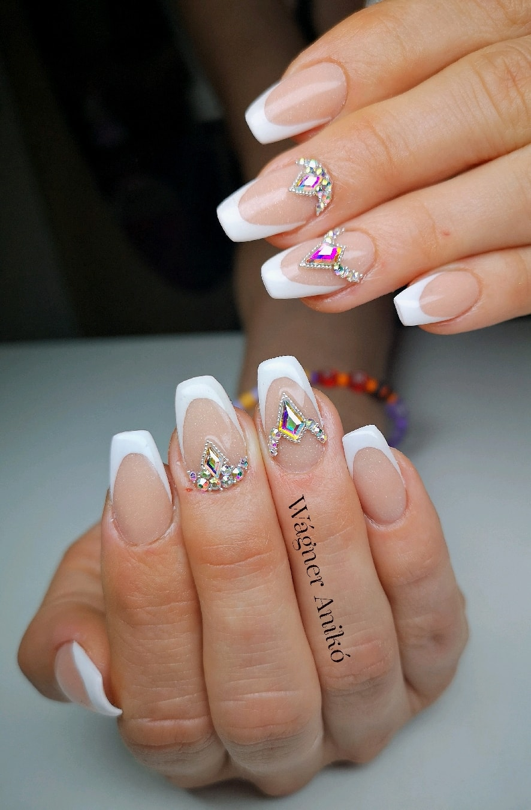
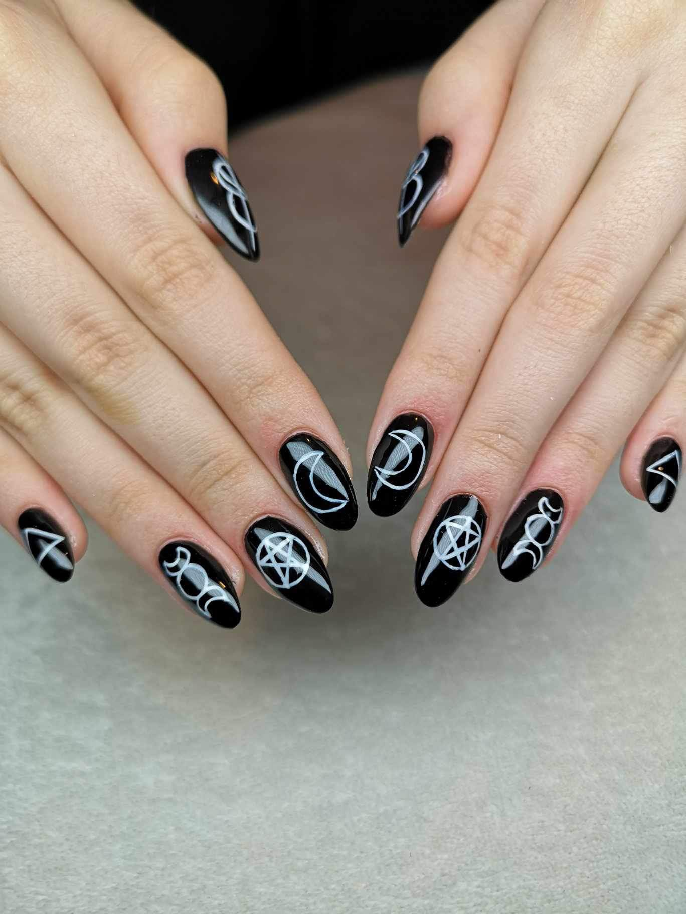
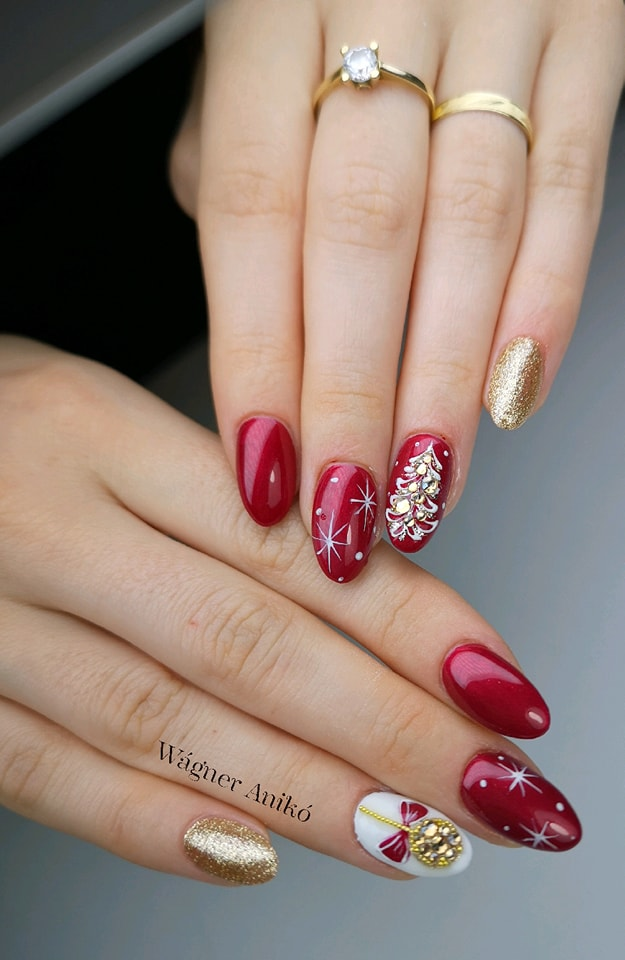
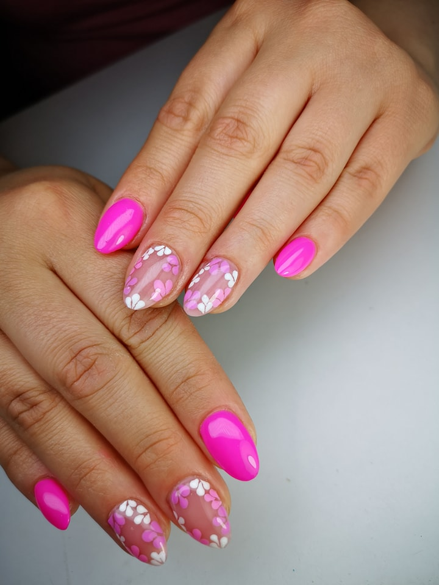
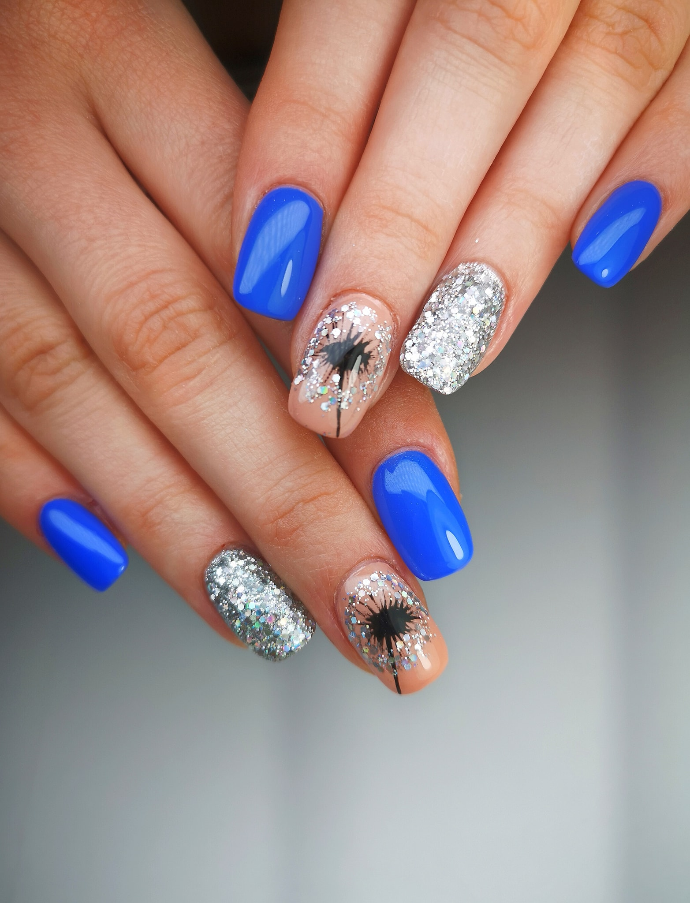
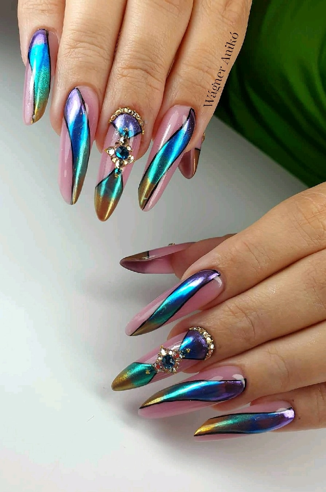

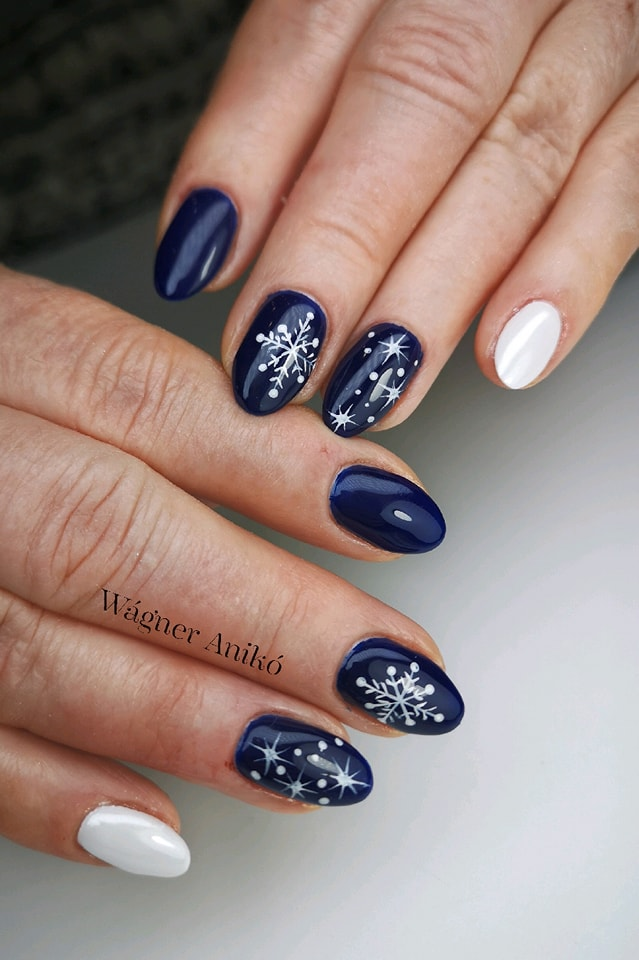

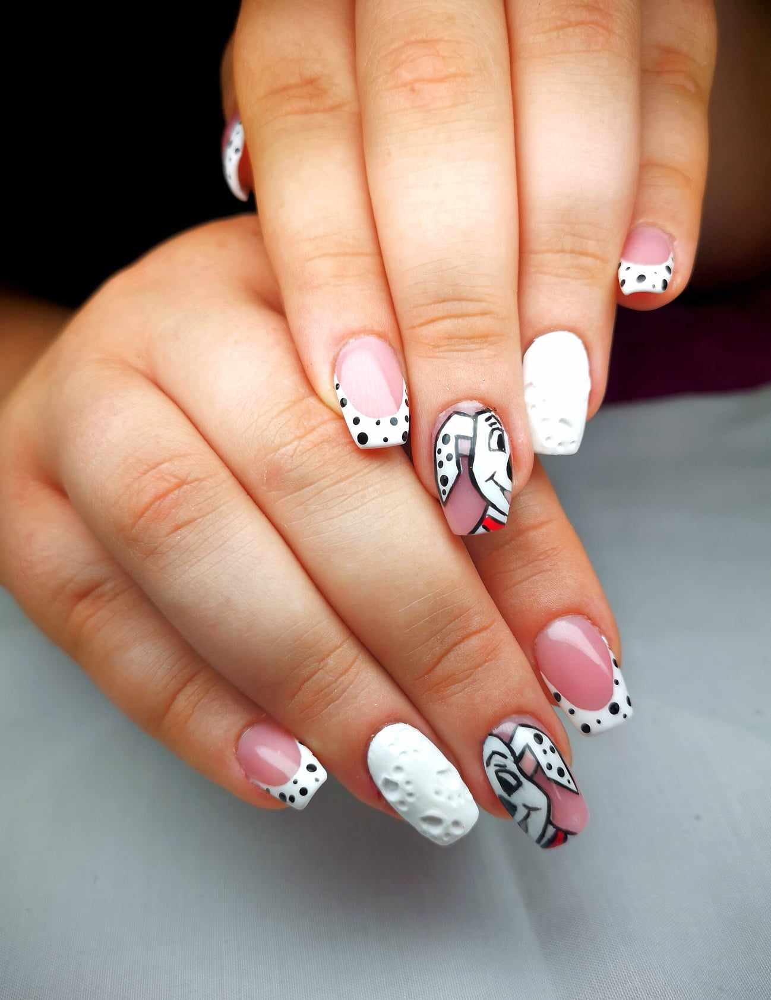
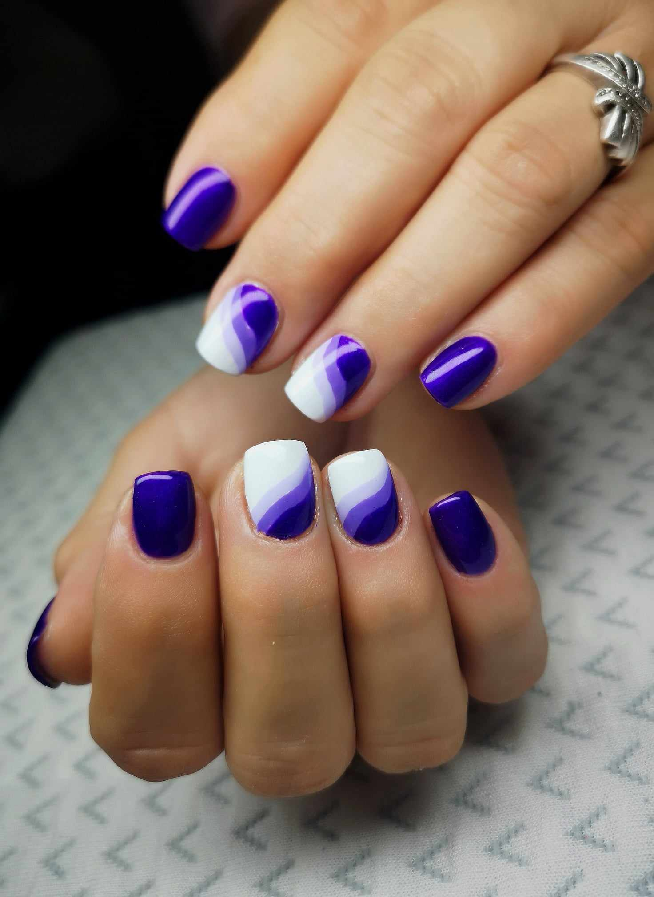
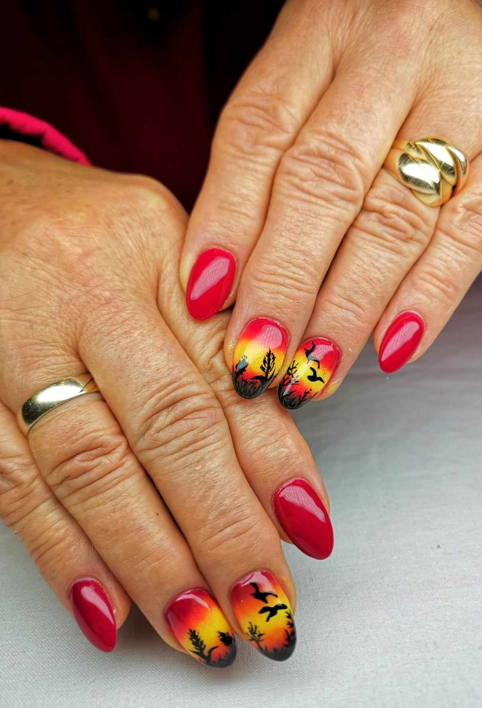
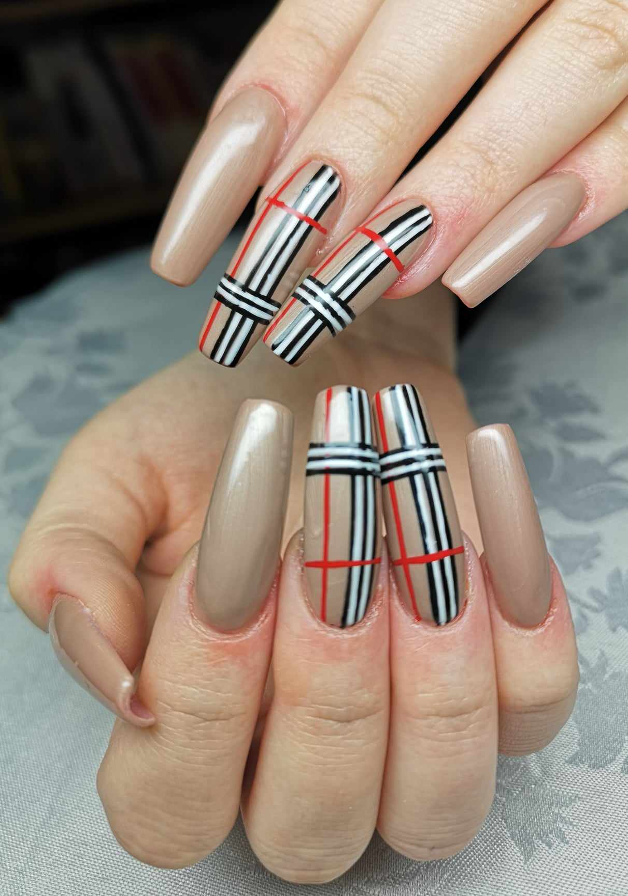
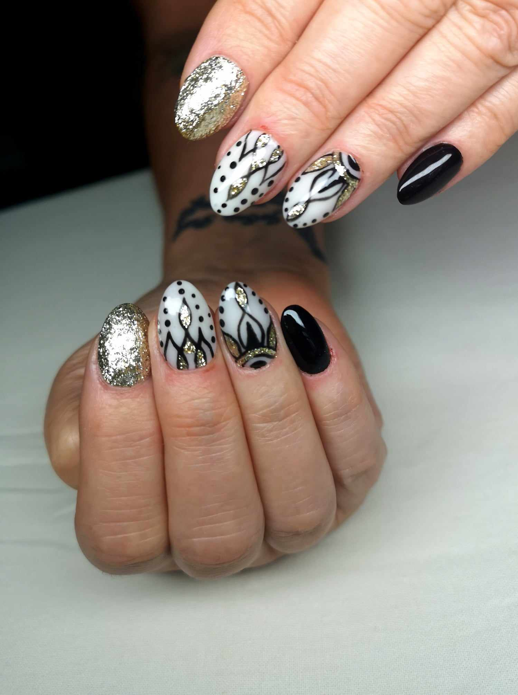
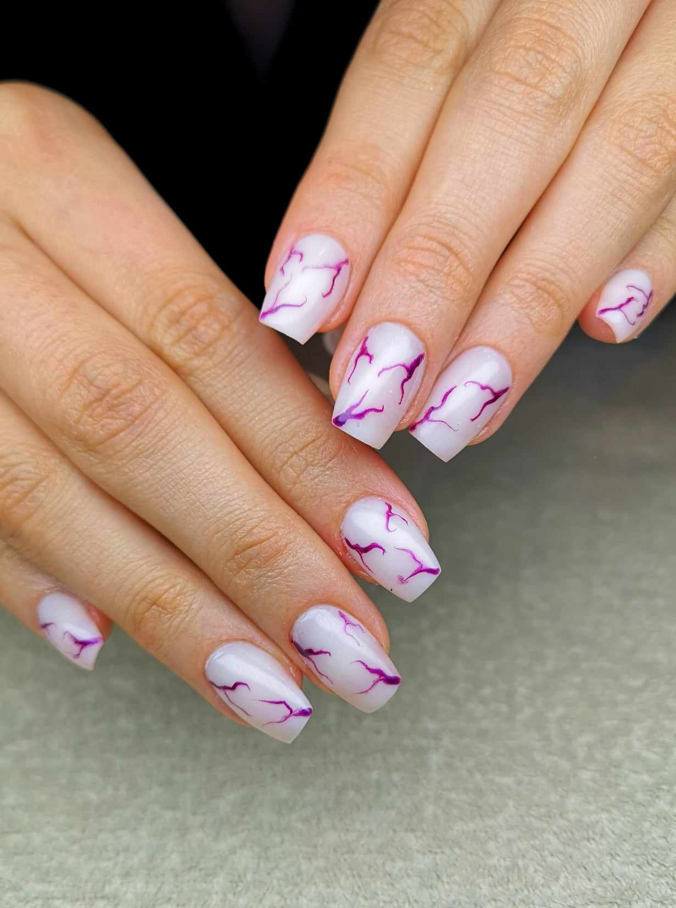
×